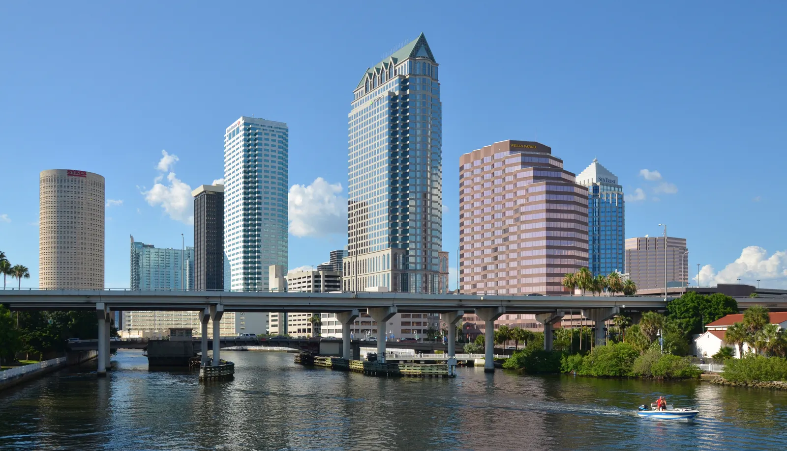

Tampa homes for sale range from historic bungalows in Seminole Heights and Hyde Park to suburban family homes and downtown condos. Prices are lower than in much of South Florida, but the 2024 hurricane season showed that location inside the city matters a lot: low-lying areas near the bay flooded badly, while higher ground did not. Rui Cunha's office is in Deerfield Beach, and he works with buyers across Florida, including the Tampa Bay area.
What it's like to live in Tampa
Tampa is the largest city on Florida's Gulf Coast. Florida's Office of Economic and Demographic Research estimated its population at 412,105 as of April 2025 (Florida EDR). It's the business center of the Tampa Bay region, with a downtown on the Hillsborough River, the bay on its southern edge and suburbs spreading north. St. Petersburg sits across the bay, and the suburbs of Hillsborough County spread out around the city.
Tampa also has ties to Brazil: it signed a sister-city agreement with Porto Alegre in 2013 (City of Tampa).
Neighborhoods and communities
A local lender's 2024 guide highlights these well-known areas (MIDFLORIDA):
- South Tampa and Hyde Park. Tree-lined streets, restored bungalows and larger homes close to downtown. Parts of South Tampa sit close to the bay, so check the flood zone carefully.
- Seminole Heights. A historic neighborhood north of downtown with an eclectic, community feel.
- Channelside. A fast-growing downtown area with modern condos and nightlife.
- Westchase and Carrollwood. Established suburban areas northwest and north of downtown, popular with families.
Prices vary widely within each area depending on the street, the age of the house and how close it is to the water. Rui can pull recent sales for the exact streets you're considering.
Tampa market snapshot
According to Redfin data reported in August 2026, the median sale price in the Tampa metro area was about $381,000 for January through June 2026, up about 2.6% from a year earlier, while active listings were down about 7.7% (WFTV / Redfin).
That's a metro-wide figure that mixes condos, suburban houses and waterfront homes. A condo in Channelside and a house in South Tampa are completely different markets. Ask Rui for a current comparison of recent sales for what you're actually considering.
Practical notes: hurricanes, flood and insurance
What happened in 2024. Two hurricanes hit the area within two weeks. According to the National Hurricane Center, Hurricane Helene in September 2024 pushed storm surge of 5 to 7 feet above ground into Tampa Bay, and the tide gauge at Old Port Tampa measured 6.83 feet above the normal high-tide line; Helene destroyed at least 419 homes in Pinellas and Hillsborough counties combined (NHC, Helene report). Two weeks later, Hurricane Milton made landfall at Siesta Key, south of Tampa, and its heavy rain caused record crests on the Hillsborough River (NHC, Milton report).
What it means for you. Flood risk in Tampa isn't only about being on the beach. Low-lying neighborhoods near the bay can flood from storm surge, and areas near rivers and creeks can flood from heavy rain. Before you make an offer:
- Check the FEMA flood zone and ask for an elevation certificate.
- Ask the seller about past flood damage and insurance claims, and look for signs of water damage during the inspection.
- Get real homeowners and flood insurance quotes. Florida's Office of Insurance Regulation puts the statewide average homeowners premium at about $3,736 a year, including wind, in the admitted market (Florida Realtors, September 2026). Your quote depends on the roof, the age of the home and its location.
- If you'll insure through Citizens, the state-backed insurer, flood coverage is becoming mandatory as that rule phases in through 2027 (News4JAX).
Condos. Florida's condo safety laws require milestone inspections for buildings of three or more stories (at 30 years, or 25 if the local building department requires it, then every 10 years — SB 154, 2023) and a Structural Integrity Reserve Study with funded reserves (Rimkus). Ask for the reserve study, budget, inspection reports and any special assessment history.
Homestead. If the home will be your primary residence, ask a CPA about Florida's homestead exemption. Second homes and non-residents don't qualify.
Schools
Tampa is served by Hillsborough County Public Schools. Use the district's school locator to confirm the assigned schools for any address, and check school grades with the Florida Department of Education.
Getting around
Tampa is car-dependent. Bridges across the bay connect it to St. Petersburg and Clearwater, and rush-hour traffic on those bridges and the interstates can change your commute a lot, so test the route at peak time before you commit.
Working with Rui in Tampa
Rui's office is in Deerfield Beach, and he helps clients across Florida. He has worked in Florida real estate since 2003, as a mortgage broker, a broker and a licensed General Contractor, which helps when you're judging an older house, a storm-repaired home or a condo building's repair plans. He can help you buy a home, look into an ITIN mortgage or plan a purchase as an international buyer. Use the mortgage calculator with taxes and insurance included, and compare with St. Petersburg and Sarasota.
FAQ
What is the median home price in Tampa?
According to Redfin data reported in August 2026, the Tampa metro median sale price was about $381,000 for January through June 2026, up about 2.6% from a year earlier. Prices vary a lot by neighborhood and property type, so compare recent sales for the area you want.
Did Tampa flood in the 2024 hurricanes?
Yes, in some areas. The National Hurricane Center reported 5 to 7 feet of storm surge inundation inside Tampa Bay during Hurricane Helene, and Hurricane Milton's rain caused record crests on the Hillsborough River. Higher-ground neighborhoods fared much better, so check the flood zone and the home's history before you buy.
Do I need flood insurance in Tampa?
Your lender will require it if the home is in a high-risk FEMA flood zone, and Citizens policyholders must carry it as that rule phases in through 2027. Even outside high-risk zones, it's worth getting a quote, because rain flooding can happen away from the coast.
Can I buy in Tampa without a Social Security number?
Many buyers use an ITIN mortgage, subject to lender approval. See our ITIN mortgage guide or contact Rui.
Talk to Rui
Thinking about Tampa? Ask Rui for a current comparison of recent sales and a flood-zone check before you make an offer.